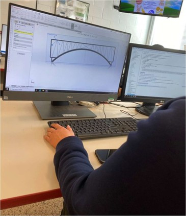
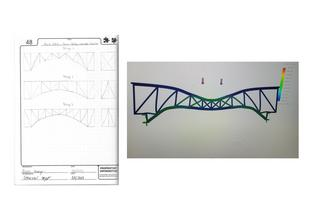
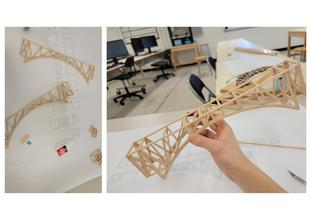
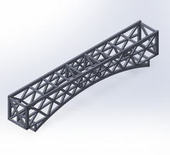
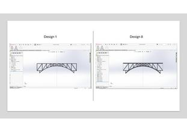
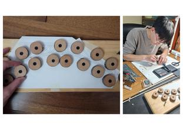

Engineering Portfolio
I design and build structurally efficient balsa wood bridges, motivated by the engineering constraints and precision of competitive design. Across three years in the Delaware Bridge Design Competition, I led structural simulation, CAD modeling, and physical construction, analyzing load paths and optimizing strength-to-weight ratios.

For my first attempt, I leveraged the structural members feature in SOLIDWORKS to model beam profiles and predict stress nodes. After evaluating different truss behaviors, our team selected an integrated X and Howe truss configuration to drive load outward towards the abutments.


Assembly required 30–40 hours of manual cutting, sizing, and jig gluing. An initial measurement discrepancy left the bridge slightly short for the testing platform, which was resolved on-site with reinforced end fixtures. The final build held up under load to capture first place out of 34 teams from 16 high schools across Delaware.
Aiming to advance beyond a standard truss, I explored research on auxiliary arch reinforcement systems. The design incorporated a secondary internal curve to brace top-deck deflection.

Constructing the secondary arch required almost double the truss cuts and complex pin-jig alignment. However, testing exposed a critical trade-off: the secondary structure added significant dead load, making the bridge 50% heavier than the 2023 version without a proportional gain in yield capacity. The resulting strength-to-weight ratio dropped, providing a direct lesson in balancing structural complexity against raw mass penalties.
Rather than introducing more components, I revisited the 2023 foundation and calibrated our digital tools. I uncovered simulation discrepancies in SOLIDWORKS caused by varying member fixtures and unmodeled joint laminations.


By enabling "treat all solid bodies as solid" and validating digital displacement ratios against physical testing data from 2023 (variance factor ~2.52) and 2024 (variance factor ~3.02), I established an empirical correlation factor to trust simulation predictions.
- Iterated through 8 distinct CAD models using calibrated FEA stress analysis.
- Eliminated segmented joint weaknesses by steam-bending and clamping the main arch into a single continuous monolithic curve instead of segmented glued pieces.

Engineering Takeaway
"In 2023 our team won without prior experience. We tried harder in 2024, but performed worse. 2025 was the year I worked the hardest—debugging the tools themselves and bridging the gap between simulation and real-world failure points. It taught me how to question assumptions and systematically iterate."